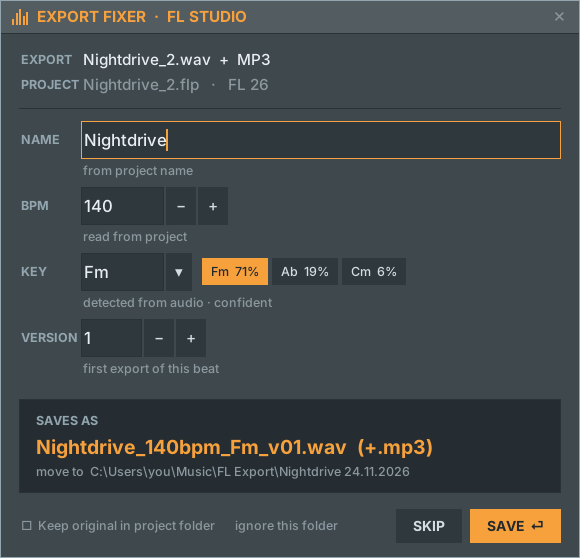
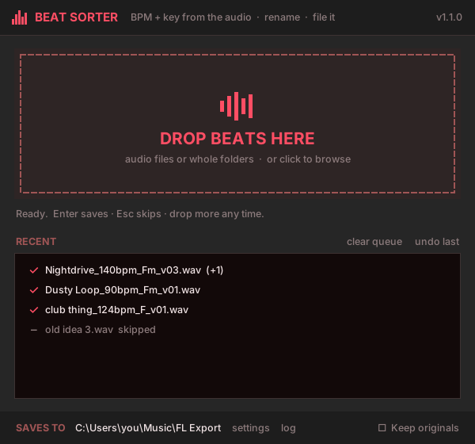
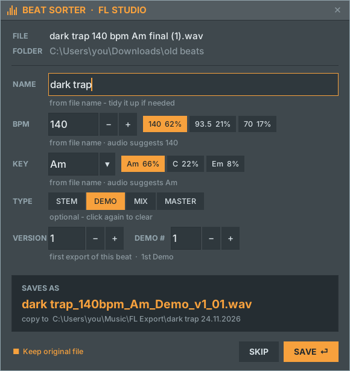
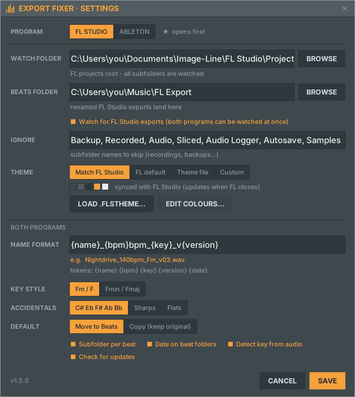
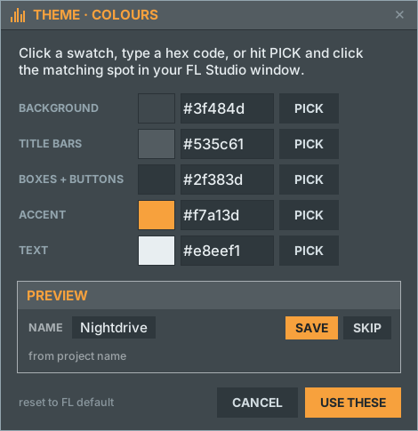

edit. 24.11.26
DAW Export Fixer v1.5.0, made by Jay. Windows 10/11 · no Python needed · works with FL Studio and Ableton Live project folders · free, share it with whoever.
download · report a bug / suggest a feature · source on GitHub
A small Windows app that watches your FL Studio projects folder, your Ableton Live projects folder, or both at once. When you export a beat, it pops up with the name, BPM, key and next version number already filled in. Hit Enter and the file is renamed and filed into one tidy beats folder. It comes with Beat Sorter for the pile of old, randomly named exports: drop them in, and it works out the BPM and key from the audio.

- EXPORTthe file(s) FL just rendered. WAV and MP3 rendered together count as one.
- NAMEfrom your project (or what you called it last time).
- BPMread straight out of the saved .flp, not guessed.
- KEYdetected from the audio. The orange chips are the top 3 guesses; click one to swap.
- VERSIONthe next free number for that beat.
- SAVES ASthe exact file name and folder it'll go to. Updates as you type.
in this section
- install
- first run
- exporting from FL
- ableton live
- the popup
- where files go
- beat sorter
- tray menu
- settings
- name format
- how accurate is it
- troubleshooting
- files, updates + uninstall
install
setup.exe (recommended)
- Download
DAW Export Fixer Setup x.y.z.exefrom the latest release and run it. It installs for your Windows user only, so there's no admin prompt. - Leave both options ticked: start the export watcher with Windows and Beat Sorter shortcut on the desktop.
- Finish with "start the export watcher now" ticked. The setup window opens (see first run).
You get Start menu entries for DAW Export Fixer (the watcher) and Beat Sorter, plus the desktop shortcut.
zip version
Grab the .zip from the same release page and unzip it somewhere permanent, e.g. Documents\Apps, not Downloads. Run DAW Export Fixer.exe. Beat Sorter is the same exe with --sorter on the end. To get a Beat Sorter shortcut: right-click the exe → Create shortcut → shortcut Properties → add --sorter after the quotes in Target. To start it with Windows, use the toggle in settings.
"windows protected your pc"
The app isn't code-signed (that costs money every year), so Windows doesn't recognise the publisher. Click More info → Run anyway. Some antivirus tools also flag apps built this way (PyInstaller) by mistake. If yours quarantines it, restore it and add an exception, or skip it if you don't trust the source you got it from. Each release lists SHA256 checksums, so you can confirm your download matches what was built.
first run
A setup window asks for two folders per program. It has an FL STUDIO and an ABLETON tab at the top: fill in the one you use, or both, and tick watch for … exports on each tab you want watched. FL Studio:
| setting | what to pick | default |
|---|---|---|
| watch folder | where FL saves your projects. Every subfolder is watched. | Documents\Image-Line\FL Studio\Projects |
| beats folder | where finished, named exports should end up. Created on first save. | Music\FL Export |
Ableton (its watch box is ticked for you if an Ableton folder already exists):
| setting | what to pick | default |
|---|---|---|
| watch folder | the folder your Live projects (the … Project folders) are saved in. Every subfolder is watched. | Music\Ableton Projects or Music\Ableton if you have one, else Documents\Ableton |
| beats folder | where named Ableton exports end up. Separate from the FL one, but you can point both at the same folder. | Music\Ableton Export |
Hit START WATCHING. From then on it lives in the system tray: the orange bars icon, bottom right. Check the ^ overflow arrow if you can't see it. Drag it onto the taskbar to keep it visible.
exporting from FL
- Export as normal (File → Export) and save into the project's own folder, which is FL's default when the project has one.
- Wait for the render to finish. The popup appears about 5 seconds later. It waits until the file has stopped growing, then a moment longer to catch an MP3 rendered alongside.
- Check it, press Enter. A toast in the corner confirms where it went, with an "open folder" link.
save the project before exporting if you changed the tempo. BPM comes from the saved .flp, so an unsaved tempo change gives you the old number. The popup warns you in red if the project was last saved more than 2 minutes before the export.
Ignored on purpose: anything rendered outside the watch folder, anything already inside the beats folder, and subfolders named Backup, Recorded, Audio, Sliced, Audio Logger, Autosave or Samples. That stops recordings and backups from triggering popups.
ableton live
Everything above works the same for Ableton Live. The app watches your Live projects folder too, and the popup shows up in Ableton colours with · ABLETON in its title bar, so you always know which program an export came from.
exporting from ableton
- Save the set (Ctrl+S) so the tempo and scale on disk are current.
- File → Export Audio/Video, and save into the set's
… Projectfolder (Live's suggestion) or anywhere else inside the watch folder. - The popup appears once the render's finished. Check it, press Enter.
Ignored on purpose in the Ableton folder: Backup, Samples (Live's recordings, freezes and consolidates), Ableton Project Info, User Library, Factory Packs, Live Recordings, Recorded and Processed.
what it reads from the set
| field | from the .als | if the set doesn't say |
|---|---|---|
| bpm | the set's tempo | the file name, else estimated from the audio (top 3 as chips) |
| key | Live's Scale setting (Live 12) when scale mode is on → else the scale most of your in-key MIDI clips use → else the set's scale if you changed it from Live's default C Major. Modes count as their nearest key: D Dorian → Dm. | remembered for the project, or detected from the audio |
| name | the set's file name | the export's file name |
The audio detector runs anyway, so its top 3 key guesses always sit beside the key as chips. Click one to override Live. For BPM, check against audio next to the box does the same. If you change the key Live gave you, the app remembers that for the project, until you set a different scale in Live.
no set found? If the export isn't next to an .als (or in <name> Project\<name>.als under the watch folder), BPM and key are both estimated from the audio, like in beat sorter.
watching both at once
Tick watch for … exports on both tabs in settings and both folders are watched side by side. The folders can even overlap. If one sits inside the other, exports in the inner folder belong to that program. If they're the same folder, the project file next to the export decides: an .als means Ableton, an .flp means FL Studio.
the popup
where each field comes from
| field | filled from (first match wins) | red hint means |
|---|---|---|
| name | what you saved this project as last time → project name if it's already in your format → Project Info title → .flp file name with junk removed (_2, 140bpm, (autosave)) | FL's auto-name like Project_23. It's pre-selected, so just type over it. |
| bpm | the saved project's tempo → the file name → estimated from the audio. check against audio adds the audio's top 3 as chips. | no tempo saved (FL default 140), couldn't read it, or the project's older than the export |
| key | Ableton only: the set's scale (see above) → what you used last time for this project → detected from the audio. Top 3 as chips, ▾ lists all 24 keys. | the detector's unsure. Check it. |
| version | highest existing version of that beat in your beats folder + 1. Recalculates if you change the name. | - |
Once you've saved a beat, its name and key are remembered for that project, so the next export of it is usually one Enter.
buttons + keys
| do | how |
|---|---|
| save | Enter or SAVE |
| skip (file left alone) | Esc, SKIP or ✕ |
| nudge bpm / version | the − + buttons |
| copy instead of move | tick keep original in project folder |
| never ask about a folder again | ignore this folder |
| move the popup | drag its title bar |
Export several things in a row and they queue up. The title bar shows +2 waiting.
where files go
Music\FL Export\
Nightdrive 24.11.2026\
Nightdrive_140bpm_Fm_v01.wav
Nightdrive_140bpm_Fm_v01.mp3
Nightdrive_140bpm_Fm_v02.wav
Nightdrive_140bpm_Fm_v03_stems\
Nightdrive_140bpm_Fm_v03_Kick.wav
Nightdrive_140bpm_Fm_v03_808.wav
Dusty Loop 09.06.2024\
Dusty Loop_90bpm_Fm_v01.wav
versions + dated folders
Each beat gets its own folder named name + DD.MM.YYYY. The date is the day of its first export. Later versions go into the same folder whatever the date, so v04 next month still sits next to v01–v03. Versions are counted per beat name, across BPM/key changes. If a file name already exists, the new one gets (2) on the end. Nothing is ever overwritten.
stems + multi-format
WAV + MP3 (or any mix of formats) from one render = one version, same name, different extensions. Split mixer tracks renders go into a …_stems folder, each file keeping its track name.
Changed your mind? Tray icon → Undo last rename puts the files back.
beat sorter (old exports)
For everything you exported before installing this: random names, no project folder, BPM and key unknown. Same popup, same naming and folders, but it works everything out from the audio itself.


using it
- Pick FL STUDIO or ABLETON at the top. That decides which beats folder your drops are filed into, and the window's colours. set as default makes it open on that tab next time.
- Open it from the desktop shortcut, the Start menu, or tray → Open Beat Sorter.
- Drop files or whole folders onto the window, or straight onto the desktop shortcut. Subfolders are included. Click the drop zone to browse instead.
- Each beat gets the popup. BPM is estimated from the audio with the top 3 as chips. The half/double-time option (70 vs 140) is always one of them.
- The folder date is the old file's own date, i.e. roughly when you made it, not today.
- keep originals (bottom right) copies instead of moving. Turn it on for your first big batch, check the results, then delete the old copies yourself.
- undo last, clear queue, settings and log are all in the window. Drop more files any time and they join the queue.
what it reads from file names
| in the name | becomes | example |
|---|---|---|
| bpm | BPM, with the audio estimate shown beside it | 140bpm, 140 BPM |
| key | key, only with a quality, so a stray capital letter isn't mistaken for one | Am, C# minor, F#maj |
| junk | removed from the name | final, mixdown, master, bounce, (1), _v2 |
dark trap 140 bpm Am final (1).wav → name dark trap, 140 BPM, Am.
tray menu
Right-click the orange bars icon:
| item | does |
|---|---|
| open FL studio / ableton beats folder | opens that program's beats folder. Your default program's comes first and is what a left-click opens. The other one only shows while it's being watched. |
| open beat sorter | opens the drop window |
| undo last rename | moves the last saved file(s) back where they were |
| pause watching | exports are left alone until you untick it |
| settings… | see below |
| open log | what it saw, skipped (with the reason) and did. Send this if something's off. |
| quit | stops watching until next launch / restart |
settings

FL studio / ableton tabs
The top of settings has a tab per program. The top half of the window (folders, watch toggle, ignore list, theme) belongs to the tab you're on, so FL and Ableton keep separate folders. Everything under both programs is shared. Switching tabs recolours the window in that program's theme and keeps anything you've typed but not saved yet. set as default picks the tab that settings and Beat Sorter open on (it shows ★ opens first on the current default).
| setting | what it does |
|---|---|
| watch folder | that program's projects root. Changing it restarts watching straight away. |
| beats folder | where that program's named exports go |
| watch for … exports | on/off per program. Both can be on at once. |
| name format | file name pattern, see name format. Live example underneath. |
| key style | Fm / F or Fmin / Fmaj |
| accidentals | mixed (C# Eb F# Ab Bb, the usual producer mix), all sharps, or all flats |
| default | move to beats folder, or copy and keep the original |
| subfolder per beat | off = every file straight into the beats folder |
| date on beat folders | the DD.MM.YYYY on folder names |
| detect key from audio | off = key box starts empty unless remembered |
| check for updates | once a day, asks GitHub if there's a newer version and shows a toast if so. Nothing else is sent. |
| start with windows | launches the watcher at login |
| ignore | subfolder names that never trigger a popup, comma-separated (per program) |
| theme | that program's colours. See colours + FL / ableton theme. |
Your version number is shown bottom-left of the settings window.
colours + FL / ableton theme
Out of the box the app wears FL Studio's stock look: blue-grey panels and the orange highlight. Ableton exports, and the Ableton tabs, use Live's own neutral grey look. If you've re-skinned FL or Live, the app can follow your theme instead. Each program has its own theme row in settings (on its tab); the FL options are:
| option | what it does |
|---|---|
| match FL studio | the default. Follows the theme FL is using, automatically. FL saves its current theme when it closes, so after you change themes the app catches up within a few seconds of you closing FL. |
| FL default | always the stock FL look, whatever FL is set to. |
| theme file | LOAD .FLSTHEME… and pick any FL theme file, e.g. one you downloaded. Your own saved themes are in Documents\Image-Line\FL Studio\Settings\Themes. |
| custom | EDIT COLOURS… and set the five colours yourself (below). |
On the Ableton tab it's the same idea: match ableton finds the theme Live is using (Live notes it in its preferences when it closes, so the app catches up a few seconds after you close Live), ableton default, theme file with LOAD .ASK… for any Live .ask theme, or custom. If the app can't tell which theme Live uses, the status line says so: load the theme's .ask file from Live's Resources\Themes folder instead.
The little swatches under the buttons preview the result. The line beside them says where the colours came from, or why it fell back to FL default (no FL theme found, unreadable file). Hit SAVE to apply. Beat Sorter's window recolours straight away. Popups use the new colours from the next one.

edit colours starts from whatever's active, so you can load your FL theme and then just touch up one colour.
- click a swatch for a colour picker, or type a hex code like
#f7a13d - PICK is an eyedropper. Have FL Studio open behind, click PICK, then click the matching spot in FL, e.g. the playlist background or a lit button. A magnifier shows the exact pixel. Esc cancels.
- reset to FL default (or ableton default) puts the stock colours back
close, not exact. FL's theme files don't spell out every panel colour. Most are FL's own grey shifted by the theme's hue / saturation / lightness sliders, so the app works them out. It gets close. If something's a shade off, switch to custom and fix it with the eyedropper.
name format
Default: {name}_{bpm}bpm_{key}_v{version}. Must contain {name} and {version}.
| token | becomes |
|---|---|
{name} | beat name |
{bpm} | 140, or 92.5 when it isn't whole |
{key} | Fm, C#… per key style |
{version} | 03 (2 digits) |
{date} | today, 2026-11-24 |
An empty field disappears with its separator. No key gives Nightdrive_140bpm_v01, not Nightdrive_140bpm__v01. Another layout: {name} - {key} - {bpm} BPM (v{version}) → Nightdrive - Fm - 140 BPM (v03).
how accurate is it
| thing | how good | usual mistake |
|---|---|---|
| bpm (watcher) | exact. It's read from the project, not guessed. | stale if you didn't save after changing tempo. Tempo automation: you get the starting tempo. |
| bpm (beat sorter) | on 16 test beats: right first time 14/16, right answer in the 3 chips 16/16. About a second per beat. | half/double time (75 read as 150, 160 as 80). Swung, sparse or drumless tracks are weaker. |
| key | a best guess. On test beats 5/6 when BPM is known. | picking the relative major/minor (Fm vs Ab). That's why the alternatives are one click away. |
The test beats were synthetic, so real-world numbers will be somewhat lower. The app never saves anything you haven't looked at. Every value goes through the popup first.
troubleshooting
- I exported and nothing popped up
- Check the folder in FL's save dialog. It often remembers the last place you used (Desktop, an old export folder), which may be outside the watch folder. Also check the tray icon isn't on pause. Then open the log: each export shows as
seen …, orskipped … (reason), e.g. inside ignored subfolder 'Audio'. - popups for recordings or bounced samples
- Click ignore this folder in the popup, or add the subfolder's name to ignore in settings.
- BPM is wrong
- Save the project, then export again. If the hint is red and the box empty, the project file couldn't be read, possibly after an FL update changed the file format. Type it in and send the log.
- key is wrong
- Click the right chip or pick from ▾. It's remembered for that project from then on.
- drag and drop doesn't work in beat sorter
- Click the drop zone to browse instead, or drop onto the desktop shortcut. If the drop zone says drag-and-drop is unavailable, reinstall.
- "couldn't save" toast
- Something still has the file open, usually FL itself or a media player. It retries for 10 seconds. Close the other program and press save again.
- "already named and filed - nothing to do"
- That file is already exactly where and what it would be renamed to.
- still stuck?
- Open a bug report and attach your log. It's the fastest way to get it fixed.
- it starts twice / two tray icons
- It can't. A second launch quietly exits. A second Beat Sorter hands its files to the open window.
files, updates + uninstall
- Settings, per-project memory and the log live in
%APPDATA%\DAW Export Fixer\:config.json,state.json,log.txt. - Update: when a toast says a new version is out, click download the update (or check the releases page) and run the new Setup over the top. Your settings are kept.
- Uninstall: Windows Settings → Apps → DAW Export Fixer → Uninstall. Your settings folder is kept in case you reinstall. Delete it to wipe everything.
- Your beats are never touched by uninstalling.
- Coming from FL Export Namer? That's this app's old name. Run the DAW Export Fixer Setup over the top: it replaces the old install, its Start menu entries and its startup entry. Your settings and per-project memory are copied from
%APPDATA%\FL Export Namer\, which is left as a backup. Delete it once you're happy.
changelog
Every version's notes are on the releases page (full history in CHANGELOG.md). Latest:
1.5.0 · 24.11.26
- New name: FL Export Namer is now DAW Export Fixer, since it handles Ableton Live too. New home: github.com/jlnorge/daw-export-fixer, guide at jlnorge.github.io/daw-export-fixer.
- Upgrading keeps your settings, per-project memory and "start with windows". Setup tidies away the old install.
1.4.1 · 24.11.26
- Fixed: the app crashed on launch ("'App' object has no attribute 'tray'") if your FL or Ableton theme isn't the stock look. If you saw that after installing 1.4.0, install this one over the top.
1.4.0 · 24.11.26
- Ableton Live support. Watches your Live projects folder too, alone or alongside FL Studio. BPM and key come from the set (tempo + Live's scale), with the audio estimate as a fallback and as one-click alternatives. See ableton live.
- FL STUDIO / ABLETON tabs in settings and Beat Sorter, each with its own folders and theme, plus set as default for the tab that opens first.
- The app can match your Ableton theme, like it does for FL.
- No tempo in the project or file name? BPM is now estimated from the audio instead of left blank. check against audio gets a second opinion any time.
1.3.1 · 24.11.26
- The project moved to github.com/jlnorge/fl-export-namer. Update checks and links follow it; this guide now lives at jlnorge.github.io/fl-export-namer.
1.3.0 · 24.11.26
- New look: FL Studio's stock grey and orange by default.
- The app can match your own FL theme: automatically, from a
.flsthemefile, or set by hand with an eyedropper. See colours + FL theme.
1.2.0 · 24.11.26
- Update check: a toast tells you when a new version is out. Turn it off in settings.
- Builds now come from GitHub, tested automatically, with checksums.